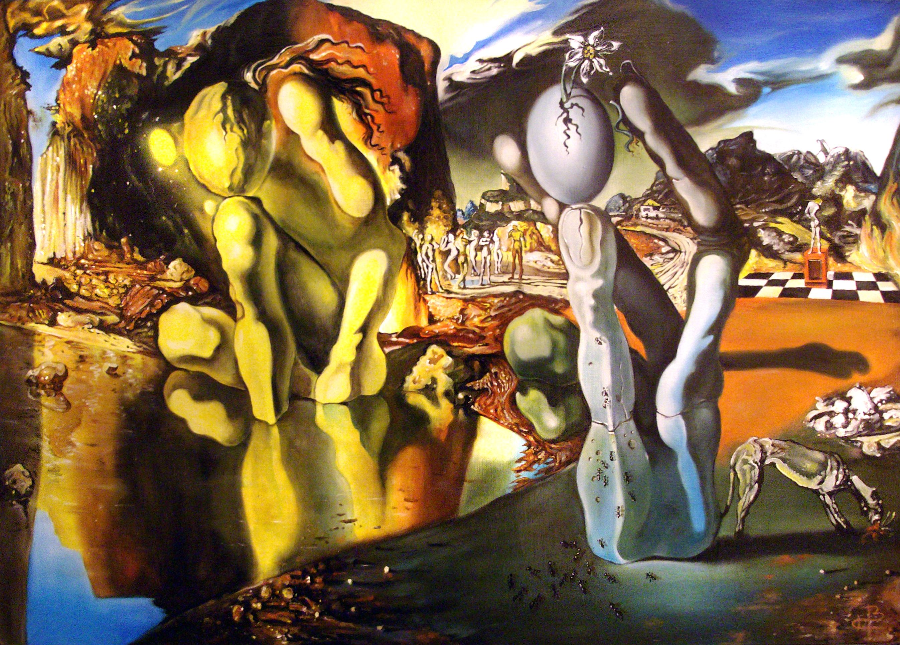

Salvador Domingo Felipe Jacinto Dalí i Domènech, Marquess of Dalí of Púbo


In 1946, Dalí worked with Walt Disney and animator John Hench
In the catalog essay for his exhibition at the Knoedler Gallery in New York in 1943 Dalí continued his attack on the Surrealist movement,
Dalí's artistic repertoire included painting, graphic arts, film, sculpture, design and photography, at times in collaboration with other artists.
His childhood friends included future FC Barcelona footballers Emili Sagi-Barba and Josep Samitier